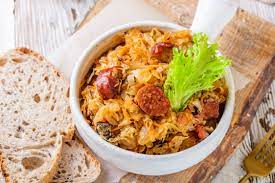

Bigos
What is Bigos?
Bigos is a hearty Polish stew made with fresh, smoked, and cured meat,
wild and cultivated mushrooms, and a hefty dose of sauerkraut.

Ingredients
- 600 g sauerkraut chopped
- 300 g white cabbage chopped
- 4 chicken thighs skinless
- 200 g Polish smoked sausage kielbasa, diced
- 7 g dried porcini mushrooms
- 8 prunes pitted, halved
- 1 onion finely chopped
- 1.5 tsp caraway seeds, dried marjoram and paprika each
- 3 allspice and juniper berries each
- 1 bay leaf
- 2 tbsp tomato paste
- 5 tbsp olive oil
- 1.5-2 cups water